HTML, CSS and Event Tutorial
ITCS 3120/6120/8120 Computer Graphics
Fall 2020
Professor Zachary Wartell
Revision 9/21/2020
4:09:32 PM (git-log)
Copyright
September 2018, Zachary Wartell @ University of North Carolina at
Charlotte
All Rights Reserved.
Learning Objectives
- Learn minimalist basics of HTML5
- Learn minimalist basics of CSS
- Learn minimalist basics of Event handling
- Learn the basics of using Developer Tools in the Chrome web browser
Overview
This course focuses on 2D/3D computer graphics and programming with WebGL. WebGL runs in the context of a HTML5 web browser environment with JavaScript. This tutorial selects a subset of several on-line resources to cover the minimal amount of HTML5, CSS and event handling required to get the most out of the book, WebGL Programming Guide, that will be used in this class.
Git Commit Protocol and Rubric
In the instructions below, you are required to make git commits at specific points using specific commit messages. This is a required part of the assignment. It also introduces you to good git practices.
- For a given exercise that includes specific git commit instructions,
if there is not at least 1 git commit message associated with that
exercise, 1 point will be subtracted for "poor software development
practices" for that exercise.
The student’s commit message need not be a verbatim copy of the commit message given in the exercise’s instructions, but it should be very similar. (But you can simply cut & paste the messages, so they really should be verbatim).
The grader will allow for a few of the required commit messages to be missing without incurring a penalty.
Note: If you accidentally commit with a missing or bad message, you can correct the message using git commit –amend option (see https://git-scm.com/book/en/v2/Git-Basics-Undoing-Things)
Finally, extra commit's are perfectly fine and common practice, such for fixing other types of coding mistakes, etc.
- For exercises that require students modify code already given to
you, if only the original example code is committed with no change
& there is no evidence from the student (documentation, notes,
etc) of trying to solve the exercise, then minimal points will be
awarded for that exercise.
The complete grading Rubric is available on Canvas.
Part 1: Project Organization and Setup
git setup
Your working directory structure and your git repository structure must
be exactly as described below.
- Create a Git repository:
https://cci-git.uncc.edu/your_userid/6120-HTML-Tutorial
- Make sure the repository is Private
and give Reporter access to both
Dr. Wartell and the TA.
- Make sure the repository is Private
and give Reporter access to both
Dr. Wartell and the TA.
- If you have not already done so, create the following directory for
your 6120 course work:
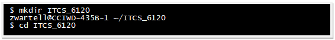
- Clone
your repo and enter the created directory.
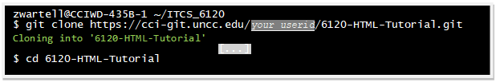
- Inside the 6120-HTML-Tutorial directory
create a text file called README.md.
Add your name on the first line of the file.
Git commit the file with the commit message “initial README.md”
- Inside the above directory create a second text file called Questions.txt.
Add your name on the first line of the
file.
Git commit the file with the commit message “initial Questions.txt”
Some of the exercises in this tutorial may involve you answering questions. You will write you answers in this file.
Setup for Chrome and Chrome DevTools
- Download and install the Chrome browser https://www.google.com/chrome
Part 2 - Option I versus Option II
All students must complete either Part 2 - Option I or Part 2 - Option II.
- Part 2 - Option I: Tutorial on HTML, CSS, Event Handling: This option is designed for individuals lacking experience in either HTML, CSS, or HTML5 Event handling.
- If you are missing any of these backgrounds you must complete the entirety of Part 2 - Option I
- Part 2 - Option II: Written Description of Prior Experience in
HTML, CSS and Event Handling:
This option is designed for individuals who already have programming experience in all three areas: HTML, CSS, and HTML5 Event handling.
Part 2 - Option I: Tutorial on HTML, CSS, Event Handling
Overview of HTML
Go to the MDN page https://developer.mozilla.org/en-US/docs/Learn/HTML. Note the expandable index on the left hand-side of the page. Expand the first sub-section. It should look like:

This assignment will guide you through reading the sub-sections highlighted red in the image above.
The instructions below tell you:
- What sections of the Chrome DevTools and Developer Mozilla (MDN) webpages to read
- Which of the “Active Learning” exercises in these articles you must perform
- How to submit the results of these “Active Learning” exercises to your git repository.
Introduction to HTML
From the index, follow the link Introduction to HTML overview. Read just the first paragraph of this page.
Getting Started with HTML
From the index, follow the link Getting
Started with HTML.
- Read
“What is HTML”
- Read
all of “Anatomy of an HTML element”
- Exercise: Do “Active learning: creating
your first HTML element”
You do not have to submit anything for this exercise.
- Exercise: Do “Active learning: creating
your first HTML element”
- Read all of “Attributes”
- Exercise: Do “Active learning: Adding attributes to
an element”
You do not have to submit anything for this exercise.
- Exercise: Do “Active learning: Adding attributes to
an element”
- Read
all of “Anatomy of a HTML document”
- Exercise [anatomy-of-HTML]: Do “Active learning: Adding
some features to an HTML document”
Perform the entire exercise in a separate file, index.html, as suggested in the Active Learning instructions. Then:
- Create a sub-directory
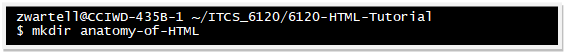
- Move index.html
to the above directory.
Git commit the file with the message "-exercise anatomy-of-HTML"
- Create a sub-directory
- Exercise [anatomy-of-HTML]: Do “Active learning: Adding
some features to an HTML document”
- Read
all of “Entity references: Including special characters in HTML”
- Read
all of “HTML comments”
- Read
all of “Summary”
What’s in the head? Metadata in HTML
Goto the next MDN subsection. There is a “Next” button at
the top and bottom of the page that you just read. (Alternatively,
from the index, follow the link to page What’s
in the head? Metadata in HTML).
- Read “What is the HTML head?”
- Read all of “Adding a title”.
While reading do the exercises below:
- Exercise [adding-a-title]:
Do “Active learning: Inspecting a simple example”
Perform the entire exercise in a separate file, title-example.html, as suggested in the Active Learning instructions.
- Create a sub-directory
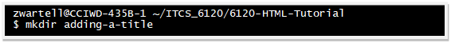
- Move title-example.html to
the above directory.
Git commit the file with the message "-exercise adding-a-title"
- Create a sub-directory
- Exercise [adding-a-title]:
Do “Active learning: Inspecting a simple example”
- Read all of “Metadata: the <meta> element”.
While reading do the exercises below:
- Exercise [char-encoding]:
Do “Active learning: Experiment with character encoding”
Perform the entire exercise by editing your file from the previous exercise, title-example.html.
- Save the file changes.
Git commit with the message "-exercise char-encoding"
- Save the file changes.
- Exercise: Do “Active learning: The description's
use in search engines”
You do not have to submit anything for this exercise.
- Exercise [char-encoding]:
Do “Active learning: Experiment with character encoding”
- Skip sub-section “Adding custom icons to your site”
- Read all of “Applying CSS and JavaScript to HTML"
While reading do the exercises below:- a)
Exercise [applying-CSS]: Do “Active
Learning: Applying CSS and JavaScript to a page”
Perform the entire exercise in separate files, meta-example.html, etc., as suggested in the Active Learning instructions.- Create a sub-directory
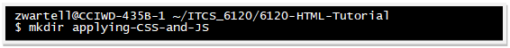
- Move meta-example.html and
the other files to the above
directory.
Git commit the file with the message "-exercise applying-CSS "
- Create a sub-directory
- a)
Exercise [applying-CSS]: Do “Active
Learning: Applying CSS and JavaScript to a page”
- Read all of “Setting the primary language of the document”
HTML text fundamentals
Goto the next MDN page, HTML text fundamentals.
- Read all of “The basics: Headings and Paragraphs”
- Exercise: Do “Active learning: Giving our content
structure”
You do not have to submit anything for this exercise.
- Exercise: Do “Active learning: Giving our content
structure”
- Read all of “Lists”
- Exercise: Do “Active learning: Marking up an
unordered list”
You do not have to submit anything for this exercise.
- Exercise: Do “Active learning: Marking up an
ordered list”
You do not have to submit anything for this exercise.
- Exercise [recipe-page]: Do
“Active learning: Marking up our recipe page”
Perform the entire exercise in a separate file, text-start.html, as suggested in the Active Learning instructions.
- Create a sub-directory
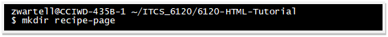
- Move text-start.html to
the above directory.
Git commit the file with the message "-exercise recipe-page"
- Create a sub-directory
- Exercise: Do “Active learning: Marking up an
unordered list”
- Read all of “Emphasis and importance”
- Exercise: Do “Active learning: Let's be important!”
You do not have to submit anything for this exercise.
- Exercise: Do “Active learning: Let's be important!”
You do not have to submit anything for this exercise.
CSS – Styling the Web
From the index, skip the rest of “HTML — Structuring the Web”, and expand the index item CSS — Styling the Web:
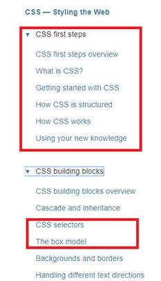
Go to page CSS
— Styling the Web, read up to and including the first section
“Learning Pathway”. Skim over the “Modules” paragraph.
The following sections of this ass will guide you through reading the
sub-sections highlighted in red above.
CSS first steps overview
From the index, follow the link CSS first steps overview.
Read up to and including the section “Prerequisites”
What is CSS?
From the index, follow the link What is CSS?
Read all sections, but stop without reading “CSS specifications”
Getting started with CSS
From the index, follow the link Getting started with CSS
- Read all of “Starting with some HTML”
- Exercise [started-with-CSS]: As described in this MDN
section, created the file, index.html
- Create a sub-directory:
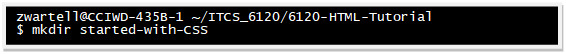
- Move the file to the above directory.
Git commit the file with the message "-exercise started-with-CSS"
- Create a sub-directory:
- Exercise [started-with-CSS]: As described in this MDN
section, created the file, index.html
- Read all of “Adding CSS to our document”
- Exercise [add-CCS]: As described in this MDN section,
create various the files, style.css,
etc. Create them in your sub-directory started-with-CSS.
Git commit the changes the message "-exercise add-CCS"
- Exercise [add-CCS]: As described in this MDN section,
create various the files, style.css,
etc. Create them in your sub-directory started-with-CSS.
- Read all of “Styling HTML elements”
- Exercise: Do the exercise using the
interactive editor described in this MDN section.
- Exercise: Do the exercise using the
- Read all of “Changing the default behavior of elements”
- Exercise [changing-behavior]: As described in this MDN
section, modify the previously created the files that you placed
your sub-directory started-with-CSS.
Git commit the changes the message "-exercise changing-behavior"
- Exercise [changing-behavior]: As described in this MDN
section, modify the previously created the files that you placed
your sub-directory started-with-CSS.
- Read all of “Adding a class”
- Exercise [adding-a-class]: As described in this MDN
section, modify the previously created the files that you placed
your sub-directory started-with-CSS.
Git commit the changes the message "-exercise adding-a-class"
- Exercise [adding-a-class]: As described in this MDN
section, modify the previously created the files that you placed
your sub-directory started-with-CSS.
- Read all of “Styling things based on their location in a document”
- Exercise [styling-on-location]: As described in this
MDN section, modify the previously created the files that you
placed your sub-directory started-with-CSS.
Git commit the changes the message "-exercise styling-on-location"
- Exercise [styling-on-location]: As described in this
MDN section, modify the previously created the files that you
placed your sub-directory started-with-CSS.
You can skip the rest of the “Getting started with CSS” article.
How CSS is structured
From the index, follow the link to How CSS is structured.
- Read all of “Applying CSS to your HTML”
- Read all of “Playing with the CSS in this article”
- Exercise [playing-with-CSS]: As described in this MDN
section, create the files, index.html,
etc.
- Create a sub-directory:
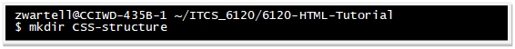
- Move the files to the above directory.
Git commit the file with the message "-exercise playing-with-CSS"
- Create a sub-directory:
- Exercise [playing-with-CSS]: As described in this MDN
section, create the files, index.html,
etc.
- Read all of “Selectors”
- Exercise [selectors]: As described in this MDN section
modify the files in your CSS-structure sub-directory.
Git commit the file with the message "-exercise selectors"
- Exercise [selectors]: As described in this MDN section
modify the files in your CSS-structure sub-directory.
- Read part of “Properties and values” up to but not including “Functions”
- Skip to section “Comments”
- Read all of “Comments”
- Exercise [comments]: As described in this MDN section
modify the files in your CSS-structure sub-directory.
Git commit the file with the message "-exercise comments"
- Exercise [comments]: As described in this MDN section
modify the files in your CSS-structure sub-directory.
You can skip the rest of the article “How CSS is structured”.
How CSS works
From the index, follow the link to How CSS works.
- Read all of “How does CSS actually work?”
- Read all of “About the DOM”
- Read all of “A real DOM representation”
- Exercise: There is an example that can be
experimented with using CodePen or JSFiddle.
Experiment with the example.
You do not have to submit anything for this exercise.
- Exercise: There is an example that can be
experimented with using CodePen or JSFiddle.
Experiment with the example.
- Read all of “Applying CSS to the DOM”
- Exercise: There is an example that can
be experimented with using CodePen or JSFiddle.
Experiment with the example.
You do not have to submit anything for this exercise.
- Exercise: There is an example that can
be experimented with using CodePen or JSFiddle.
Experiment with the example.
- Read all of “What happens if a browser encounters CSS it doesn't
understand?”
- Exercise: There is an example that can
be experimented with using CodePen or JSFiddle.
Experiment with the example.
You do not have to submit anything for this exercise.
- Exercise: There is an example that can
be experimented with using CodePen or JSFiddle.
Experiment with the example.
You can skip the rest of the article “How CSS works”.
The box model
From the index, follow the link to The box model
- Read all of “Block and inline boxes”.
- Read all of “Aside: Inner and outer display types”.
- Read all of “Examples of different display types”
- Exercise: There is an example that can be experimented with. Experiment with the example.
- You do not have to submit anything for this exercise.
- Read all of “What is the CSS box model?”
- Read all of “Playing with box models”
- Exercise [playing-box]:
- This MDN section provides an interactive example that can be
done directly within the webpage.
You do not have to submit anything for this exercise.
You do not have to submit anything for this exercise.
Event Programming (and a teeny bit of JavaScript)
This section guides you through reading about event handling, but first it covers a teeny bit of JavaScript so as to better understand the event handling tutorial.
What is JavaScript
From the index, follow the link to What is JavaScript?
- Read all of “A high-level definition”
- Exercise [javascript-label]:
- Create a sub-directory:
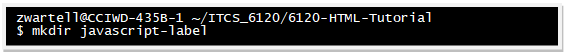
- Inside that sub-directory download and save the
example code (the link is given at the end the “A high-level
definition” section).
Verify the code displays correctly in Chrome. - Git commit the file with the message "-exercise javascript-label"
- Using a text editor, change the code to display ‘First
Player’ instead of ‘Player 1’.
Modify the background color of the paragraph style. Save your changes and verify the page appears correctly in Chrome. - Git commit the file(s) with message: "-exercise javascript-label"
- Create a sub-directory:
- Exercise [javascript-label]:
- Read all of “So what can it really do?”
- Exercise [third-party-apis]:
- After reading, online find any Third party API not
mentioned in the text. Write the API name and the
web address in your Questions.txt
file. Put the text “JS 1)” on the line above your
answer in the file.
- Git commit the file(s) with message: "-exercise third-party-apis"
- After reading, online find any Third party API not
mentioned in the text. Write the API name and the
web address in your Questions.txt
file. Put the text “JS 1)” on the line above your
answer in the file.
- Exercise [third-party-apis]:
- Read all of “What is JavaScript doing on your page?“
- Exercise [what-is-JS]:
- After reading, research on-line to find out how two browsers
(say Chrome and one other browser of your choice)
handles JavaScript. Is it interpreted?
Compiled? Some combination of both?
Write your answers in your Questions.txt file. Put the text “JS 2)” on the line above your answer in the file.
- Git commit the file(s) with message: "-exercise what
is JS doing"
- After reading, research on-line to find out how two browsers
(say Chrome and one other browser of your choice)
handles JavaScript. Is it interpreted?
Compiled? Some combination of both?
- Exercise [what-is-JS]:
- Read all of “How do you add JavaScript to your page?”
While reading do the following exercises:
- Exercise [internal-js]: Do the exercise in sub-section
“Internal JavaScript”
- Create a sub-directory:
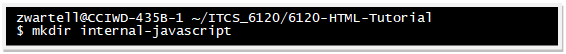
- Move all the code for the MDN exercise into the above
sub-directory.
Verify it displays correctly in Chrome. - Git commit the file(s) with message: "-exercise internal-javascript"
- Create a sub-directory:
- Exercise [external-js]: Do the exercise in sub-section
“External JavaScript”
- Create a sub-directory:
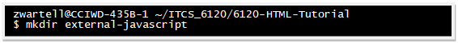
- Move all the code for the MDN exercise into the above
sub-directory.
Verify it displays correctly in Chrome. - Git commit the file(s) with message: "-exercise external-javascript"
- Create a sub-directory:
- Exercise [internal-js]: Do the exercise in sub-section
“Internal JavaScript”
- Read all of “Comments” and “Summary”
This introduction to JavaScript should be enough in order to complete the rest of this assignment.
Introduction to Events
From the index, under “JavaScript building blocks”, follow the link to Introduction to events.
- Read all of “A series of fortunate events”
- Read all of “Ways of using web events”
While reading do the following exercises:- Exercise [random-color]:
- Create a sub-directory:
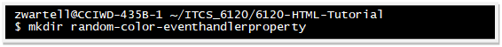
- Move the file(s) for the above exercise into the above
sub-directory.
Verify it displays correctly in Chrome.
The code you leave uncommented and running may be anything reasonable. - Git commit the file(s) with message:
"-exercise random-color-eventhandlerproperty"
- Create a sub-directory:
- Exercise [random-color-add]:
In sub-section “addEventListener() and removeEventListener()”, do all the MDN experiments described for the file random-color-addeventlistener.html. Experiment a bit with the code.
- Create a sub-directory:
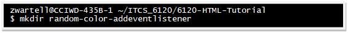
- Move the file(s) for the above exercise into the above
sub-directory.
Verify it displays correctly in Chrome. (Your code may be modified in any reasonable way you like). - Git commit the file(s) with message:
"-exercise random-color-addeventlistener"
- Create a sub-directory:
- Exercise [random-color]:
- Read all of “Other event concepts”
While reading do the following exercises:
- Exercise:
In subsection “Event Objects”, retrieve the file useful-eventtarget.html.- Create a sub-directory:
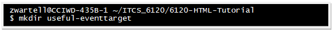
- Move the file(s) for the above exercise into the above
sub-directory. Verify it displays correctly in Chrome.
- Git commit the file(s) with message:
"-imported useful-eventtarget"
- Modify the code to render 32 clickable squares instead of
16. Also, make any other minor change your
feel like making to the rendering of the squares.
- Git commit the file(s) with message: "-playing
:)"
- Create a sub-directory:
- Exercise [show-video]:
In sub-section “Event Objects” retrieve the file show-video-box.html, as well as the required data files.- Create a sub-directory:
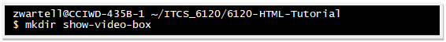
- Move the file(s) for the above exercise into the above
sub-directory. Verify it displays correctly in Chrome.
- Git commit the file(s) with message:
"-imported show-video-box"
- Fix the bug as describe in the “Event bubbling and capture” section.
- Git commit the file(s) with
message: "-bug
fix!"
- Create a sub-directory:
- Exercise:
- Read all of “Conclusion”
Part 2 - Option II: Written Description
of Prior Experience in HTML, CSS and Event Handling
This is an alternate version of Part 2. It is only for students
meeting the criteria discussed in the beginning of Section 4.
Note: Completing the alternate version of Part 2, will cause total weight of this tutorial to have a much lesser weight toward your total semester grade. (See Canvas Rubric for details).
In your README.md file add the following:
- List all courses you already took or are currently taking where you
learned HTML5, CSS, and Event Handling.
- List any other experience you had outside of a class work where you learned HTML5, CSS, and Event Handling.
Don’t forget to git commit and git push your changes.
Part 3: Chrome DevTools
Panel Overview
- Using Chrome goto https://developers.google.com/web/tools/chrome-devtools/
- Panel Overview:
Read all of the “Chrome DevTools” page -- but do not follow any further hyperlinks -- to get a rough idea of the functionality that the various “panels” provide.
Get Started With Viewing And Changing The DOM
Under “Elements Panel”, follow the link Get Started With Viewing And Changing The DOM- Read the first paragraph and follow the link to Appendix:
HTML versus the DOM and read through that appendix
before continuing.
- "View DOM nodes” - return to “Get Started With Viewing And Changing
The DOM” and continue reading sub-section “View DOM nodes”
Do all the exercises in this sub-section. Regarding the further links embedded this sub-section follow and read all them -- but skip Get Started With Viewing And Changing CSS.
- “Edit the DOM”
Do all the exercises in this sub-section.
Take 1 screenshot of the page as it appears after all your DOM changes. Save it to a png file named edit-DOM.png.
- Create the following directory structure:
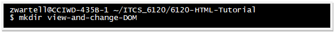
- Move the png file into this directory.
- Git commit the above files with commit message "-exercise edit-the-dom"
- Create the following directory structure:
- “Access nodes in the Console”
Do all the exercises, but there is nothing to submit to git.
- “Break on DOM changes”
Do all the exercises, but there is nothing to submit to git.
- “Next Steps” - read this sub-section.
Get Started With Viewing And Changing CSS
Return to the DevTools main page. Under “Elements Panel”, follow the link Get Started With Viewing And Changing CSS
-
Read “View an element's CSS”
-
Exercise: Do them all, but
there is nothing to submit to git.
-
Exercise: Do them all, but
there is nothing to submit to git.
-
Read “Add a CSS declaration to an element”
-
Exercise: Do them all, but
there is nothing to submit to git.
-
Exercise: Do them all, but
there is nothing to submit to git.
-
Read “Add a CSS class to an element”
-
Exercise: Do them all, but
there is nothing to submit to git.
-
Exercise: Do them all, but
there is nothing to submit to git.
-
Read “Add a pseudostate to a class”
-
Exercise: Do them all, but
there is nothing to submit to git.
-
Exercise: Do them all, but
there is nothing to submit to git.
-
Read “Change the dimensions of an element”
- Exercise: Do them all, but there is nothing to submit to git.
Get Started With The Console
Return to the DevTools main page. Under “Elements Panel”, follow the link Get Started With The Console.
-
Before reading this page do the following:
Exercise:
Create the following directory structure:
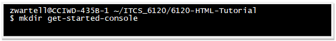
-
“Viewing logged messages” – read this section.
At this time do not follow link Get Started With Logging Messages
-
“Running JavaScript” – read this section
At this time do not follow link Get Started With Running JavaScript
Get Started With Logging Messages
Now follow the first link you skipped in Section 5.4, i.e. go to Get Started With Logging Messages.
- “Set
up the demo and DevTools”
Read and do all the exercises in this section.
- Click the Settings Icon in the Console (). Enable the check
box |Preserve Log|. Click
the Settings Icon again to close the Settings panel.
- Exercise [save-log]:
-
Return to the Console window and right click the mouse on
any Console output line. A pop-up menu will list an
option |Save As|.
Select |Save As|.
This opens a dialog box to save all the text that you typed in at
the Console.
-
Save the file to the directory, get-started-console
that you created the directory earlier.
-
Verify the file is saved to the directory:
![Text Box: zwartell@CCIWD-435B-1 ~/ITCS_6120/6120-HTML-Tutorial/get-started-console /
$ lsdevelopers.google.com-1535898597380.log [.your file name will differ.]zwartell@CCIWD-435B-1 ~/ITCS_6120/6120-HTML-Tutorial/get-started-console /$ cat developers.google.com-1535898597380.log [cat displays the file contents… your details will differ.] document.getElementById('changeMyText')<button id="changeMyText">Change My Text</button>document.getElementById('changeMyText').textContent = 'Hello'VM378:1 Uncaught TypeError: Cannot set property 'textContent' of null [….the rest of log file will appear here … ]](images/image021.png)
-
Git commit the above file(s) with commit message:
"-exercise get-started-console #1"
-
Return to the Console window and right click the mouse on
any Console output line. A pop-up menu will list an
option |Save As|.
Select |Save As|.
This opens a dialog box to save all the text that you typed in at
the Console.
- “View messages logged from JavaScript”
Read and do all the exercises this section. Then save the console output log:-
Exercise [save log]:
-
Return to the Console window and right click the
mouse on any Console output line. A pop-up menu
will list an option |Save As|.
Select |Save As|.
This opens a dialog box to save all the text that you typed in
at the Console.
-
Save the file to the directory, get-started-console
that you created the directory earlier.
- Verify the file is saved to the directory (as discussed
earlier)
- Git commit the above file(s) with commit message:
"-exercise get-started-console #2"
-
Return to the Console window and right click the
mouse on any Console output line. A pop-up menu
will list an option |Save As|.
Select |Save As|.
This opens a dialog box to save all the text that you typed in
at the Console.
-
Exercise [save log]:
- “View messages logged by the browser”
Read and do all the exercises this section. Then save the console output log:
-
Exercise [save log]:
- Return to the Console window and right click the mouse on
any Console output line. A pop-up menu will list
an option |Save As|.
Select |Save As|.
This opens a dialog box to save all the text that you typed in
at the Console.
- Save the file to the directory, get-started-console
that you created the directory earlier.
-
Verify the file is saved to the directory (as
discussed earlier)
- Git commit the above file(s) with commit message:
"-exercise get-started-console #3"
- Return to the Console window and right click the mouse on
any Console output line. A pop-up menu will list
an option |Save As|.
Select |Save As|.
This opens a dialog box to save all the text that you typed in
at the Console.
-
Exercise [save log]:
- “Use the Console alongside any other panel”
Skip ahead to the above sub-section and read it.
“Get Started With Running JavaScript In The Console”
Now follow the second link you skipped in Section 5.4, i.e. go to Get
Started With Running JavaScript In the Console
- Click the Settings Icon in the Console (). Enable the check box Preserve Log, (if it’s not already enabled). Click the Settings Icon again to close the Settings panel.
- Return to the “Console” window and right click the mouse on any
Console output line. In the pop-up menu, select |Clear
console|.
- Now read this entire DevTools article and work through all the
examples.
When you are done, save the console log as follows:
- Exercise [save log]:
- Return to the “Console” window and right click the
mouse. In the pop-up menu, select |Save
As|. This opens a dialog box to
save all your interactions on the Console.
- Save the file to the directory, get-started-console
that you created the directory earlier.
- Verify the file is saved to the directory (as described
earlier)
- Git commit the above file(s) with commit message:
"-exercise javascript-console”
- Return to the “Console” window and right click the
mouse. In the pop-up menu, select |Save
As|. This opens a dialog box to
save all your interactions on the Console.
- Exercise [save log]:
Academic Integrity
- This is an individual assignment. Each student must write and submit their own unique code, logs, answers, etc.
- However, feel free work together in pairs or groups.
- As far as programming projects are concerned, you are allowed to discuss general concepts and strategies for solving problems.
- No sharing of modules or parts of programs written by other students is allowed.
The TA will be running the submitted code through various plagiarism detection software such as TurnitIn.
Appendix: Notes for TA and Professor
This section should NOT be distributed to students when the file is printed to a PDF
- Minimal Javascript:
- https://developer.mozilla.org/en-US/docs/Learn/JavaScript/First_steps/What_is_JavaScript
- https://developer.mozilla.org/en-US/docs/Learn/JavaScript/First_steps/A_first_splash
- Minimal Events
- Console Panel
Extracted Links:
- https://developers.google.com/web/tools/chrome-devtools/
- https://developers.google.com/web/tools/chrome-devtools/
- https://developers.google.com/web/tools/chrome-devtools/
- http://www.csszengarden.com/221/
- https://git-scm.com/book/en/v2/Git-Basics-Undoing-Things
- https://www.google.com/chrome
- https://developers.google.com/web/tools/chrome-devtools/
- https://developers.google.com/web/tools/chrome-devtools/beginners/html
- https://developers.google.com/web/tools/chrome-devtools/beginners/html
- https://developer.mozilla.org/en-US/docs/Learn/HTML/Introduction_to_HTML/Getting_started
- https://developer.mozilla.org/en-US/docs/Learn/HTML/Introduction_to_HTML/Getting_started
- https://developer.mozilla.org/en-US/docs/Learn/HTML/Introduction_to_HTML/The_head_metadata_in_HTML
- https://developer.mozilla.org/en-US/docs/Learn/HTML/Introduction_to_HTML/HTML_text_fundamentals
- https://developer.mozilla.org/en-US/docs/Learn/CSS
- https://developer.mozilla.org/en-US/docs/Learn/CSS
- https://developer.mozilla.org/en-US/docs/Learn/CSS/Introduction_to_CSS
- https://developer.mozilla.org/en-US/docs/Learn/CSS/Introduction_to_CSS/How_CSS_works
- https://developer.mozilla.org/en-US/docs/Learn/CSS/Introduction_to_CSS/Syntax
- https://developer.mozilla.org/en-US/docs/Learn/CSS/Introduction_to_CSS/Box_model
- https://developer.mozilla.org/en-US/docs/Learn/JavaScript/First_steps/What_is_JavaScript
- https://developer.mozilla.org/en-US/docs/Learn/JavaScript/Building_blocks/Events
- https://developers.google.com/web/tools/chrome-devtools/
- https://developers.google.com/web/tools/chrome-devtools/beginners/html
- https://developers.google.com/web/tools/chrome-devtools/
- https://developers.google.com/web/tools/chrome-devtools/css/
- https://developers.google.com/web/tools/chrome-devtools/
- https://developers.google.com/web/tools/chrome-devtools/inspect-styles/
- http://www.csszengarden.com/221/
- https://developers.google.com/web/tools/chrome-devtools/
- https://developers.google.com/web/tools/chrome-devtools/inspect-styles/edit-dom
- https://developers.google.com/web/tools/chrome-devtools/
- https://developers.google.com/web/tools/chrome-devtools/console/get-started
- https://developers.google.com/web/tools/chrome-devtools/
- https://developers.google.com/web/tools/chrome-devtools/console/
- https://developer.mozilla.org/en-US/docs/Learn/JavaScript/First_steps/What_is_JavaScript
- https://developer.mozilla.org/en-US/docs/Learn/JavaScript/First_steps/A_first_splash
- https://developer.mozilla.org/en-US/docs/Learn/JavaScript/Building_blocks/Events
- https://developers.google.com/web/tools/chrome-devtools/console/get-started
https://developer.mozilla.org/en-US/docs/Learn/CSS/Introduction_to_CSS/Selectors
https://developer.mozilla.org/en-US/docs/Learn/CSS/Introduction_to_CSS/Simple_selectors
Selectors
https://developer.mozilla.org/en-US/docs/Learn/CSS/Introduction_to_CSS/Selectors
Simple Selectors
https://developer.mozilla.org/en-US/docs/Learn/CSS/Introduction_to_CSS/Simple_selectors